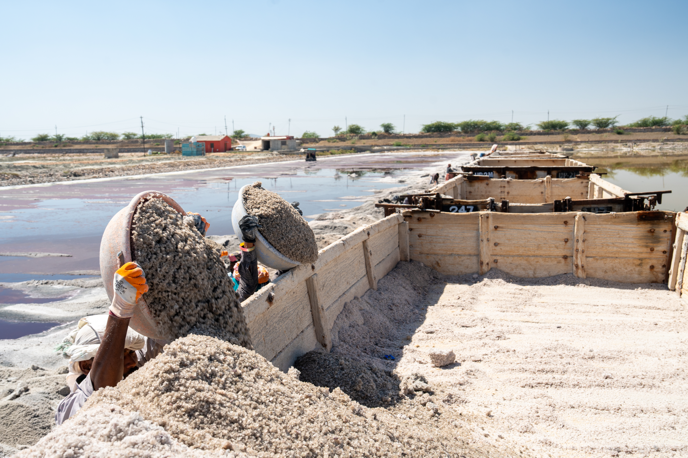
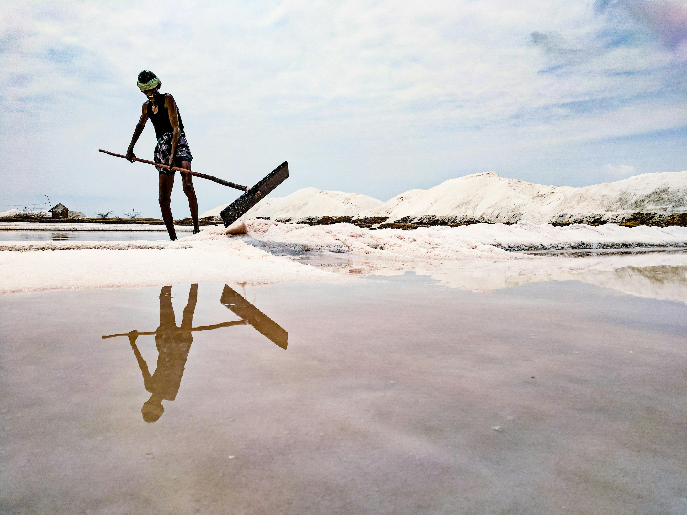
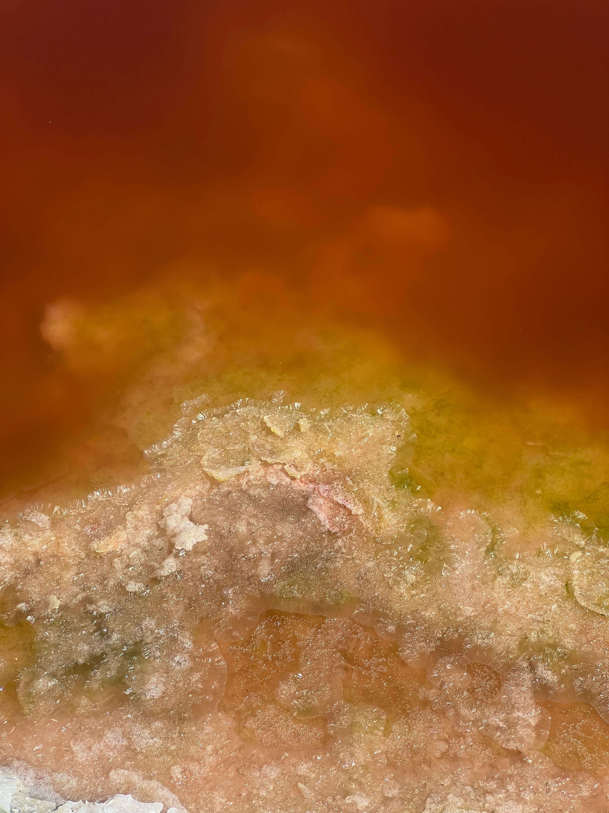
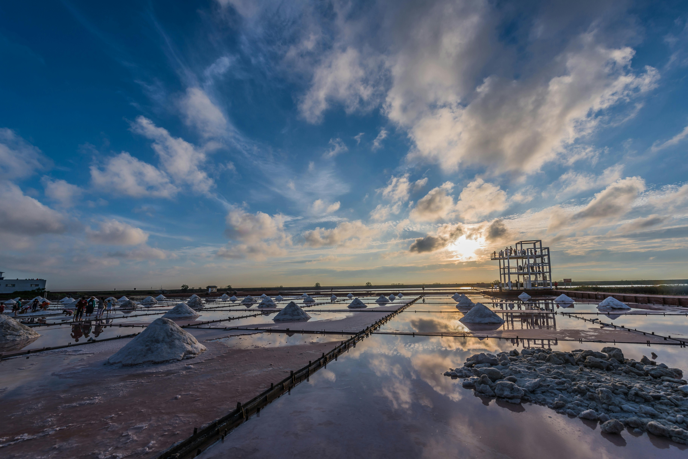
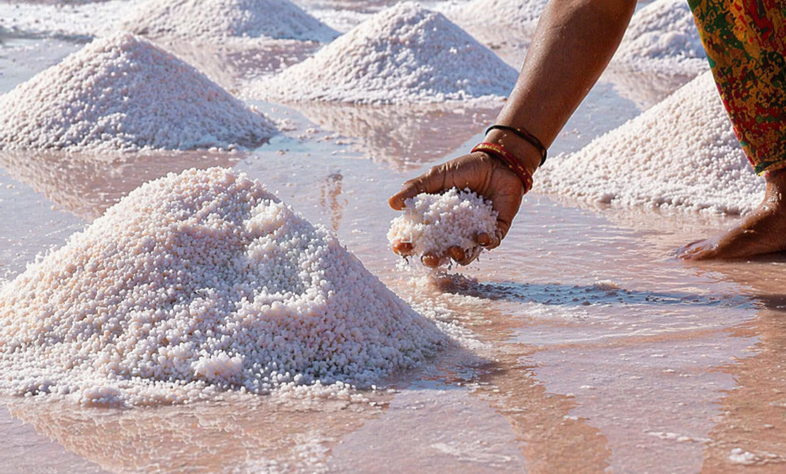
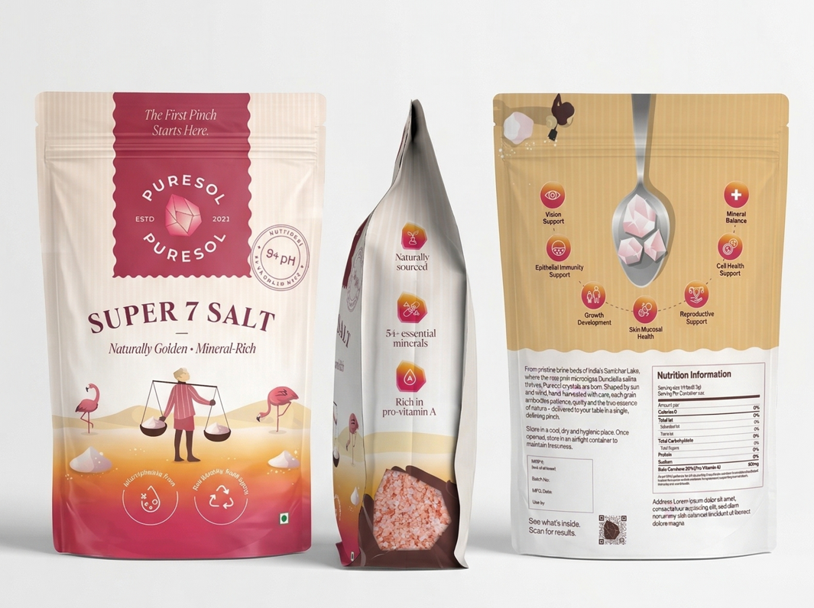
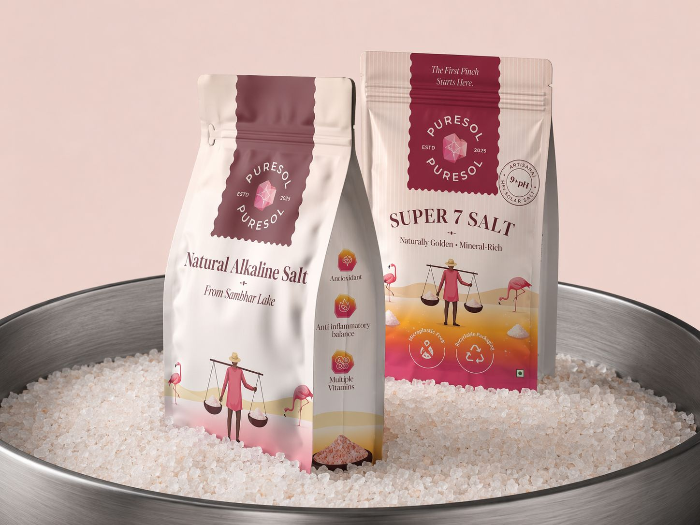
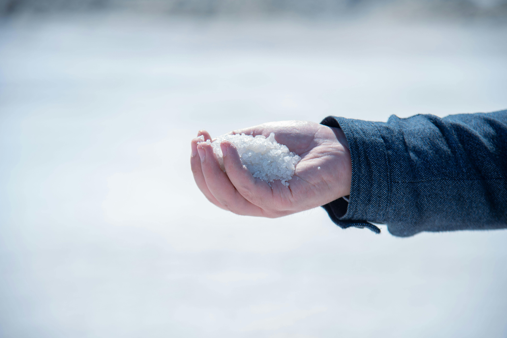

Research · Process · Evidence
The Science
Every claim here is grounded in chemistry and biology.
No marketing language. Just what the salt is and how it got that way.
Suryatapa
From Lake to Table — Six Natural Steps
Every grain of Puresol follows the same process that has produced salt at Sambhar Lake for over a thousand years. No shortcuts. No industrial acceleration. The sun does the work; time locks the minerals in.

01Capillary Rise
Groundwater salts rise through soil. Minerals accumulate and alkalise over millennia.

02Brine Channeling
Lake brine is directed into shallow pans. Subsoil brine joins it, maximising mineral concentration.

03Algae Colonisation
Dunaliella salina colonises the brine, contributing iodine, beta-carotene, and the biological rose hue.

04Sun-Curing (9–12 Months)
Crystals form slowly under the Rajasthani sun. Patience locks the full mineral profile into bioavailable forms.

05Hand Harvest
Hand-collected from Sambhar Sarovar. No machinery, no heat treatment, no bleaching.

06Eco Packaging
Cleaned and packed in recyclable packaging. From brine bed to kitchen — zero industrial processing.
The Living Organism
Why the Salt
Is Pink
Dunaliella salina is a halophilic (salt-loving) microalgae that colonises Sambhar Lake's hypersaline brine beds. It thrives in conditions that would destroy most life. And in doing so, it transforms the salt around it.
Himalayan salt is pink because of iron oxide — the same compound that makes rust red. Puresol is pink because of a living organism. The difference is biological. When the algae produces beta-carotene as a UV shield against Rajasthan's intense sunlight, it leaves that pigment in every crystal that forms around it.
The pink colour you see is biological proof of life in the brine — and of the carotenoids that are now in your salt.
- Natural iodisation — concentrates iodine from brine, no artificial KIO₃ required
- Biological pink — beta-carotene pigment, not iron oxide (rust)
- Pro-Vitamin A — especially concentrated in Super 7 Salt
- Antioxidant load — beta-carotene among nature's most potent

Purity
Zero Microplastics.
A Consequence of Geography.
A 2018 study published in Environmental Science & Technology tested 39 brands of salt from 21 countries. Microplastics were found in 36 of them. Not trace amounts — a consistent, measurable presence. The news cycle moved on. The salt on most kitchen shelves did not change.
Puresol comes from an inland lake with no connection to the ocean, no industrial activity on its banks, and Ramsar wetland protection under international treaty. The plastic waste stream that circulates through every ocean current on earth has never touched Sambhar Lake.
Zero detectable microplastics. Not a marketing claim. A consequence of geography.

Natural Chemistry
Alkalinity That
Grew in the Earth
Refined table salt sits at pH 7. Himalayan pink salt reaches 7.5 on a good day. Puresol exceeds pH 9. This is not the result of treatment, buffering, or chemical fortification. It is geology.
Sambhar Lake's alkaline brine beds formed over millennia as mineral-rich groundwater rose through the soil by capillary action. Calcium, magnesium, potassium, and dozens of trace elements concentrated and alkalised the brine over centuries. The salt that crystallises here carries that alkalinity in its lattice structure — locked in, not added.
- Reduces acid load contribution of daily salt intake
- Supports the kidneys by reducing constant pH buffering demand
- Gentler on digestion than acidic or neutral refined salts
- No chemical treatment or buffering agents at any stage
Side by Side
The Numbers Speak
Puresol is not incrementally better. The gap between it and what fills most salt shakers is structural.
| Parameter | Refined Table Salt | Himalayan Pink Salt | Puresol |
|---|---|---|---|
| pH | 7 | 7–7.5 | >9 |
| Alkalinity | Neutral | Slightly Alkaline | Naturally High |
| Trace Minerals | 2 (stripped) | 12–15 | 54+ |
| Processing | Industrial refining | Mined & ground | Sun-Cured 9–12 mo. |
| Microplastics | High (ocean source) | Moderate (mining) | Zero (inland lake) |
| Beta-Carotene | None | None | 30–35% Pro-Vit A |
| Iodisation | Artificial (KIO₃) | None | Natural (Dunaliella) |
| Additives | Anti-caking agents | None | None |
| Ecological Impact | High (industrial) | Moderate (mining) | Solar-powered, sustainable |
Ready to Switch?
The Same Salt Your Kitchen
Has Always Needed
Everything here happened in a lake in Rajasthan, over a thousand years, without a factory. The only thing we did was bring it to your table.